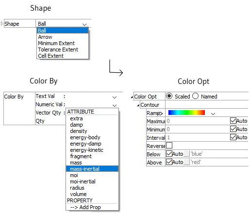

PFC 中的绘图项
| 名称 | 说明 |
|---|---|
| 球体（Ball） | 按属性或特性着色的球体。 |
| CFD 球体（Ball CFD） | 按属性或特性着色的 CFD 球体（仅 PFC3D）。 |
| 球体热学（Ball Thermal） | 按属性或特性着色的热学球体。 |
| 刚性簇（Clump） | 按属性或特性着色的刚性簇。 |
| CFD 刚性簇（Clump CFD） | 按属性或特性着色的 CFD 刚性簇（仅 PFC3D）。 |
| 刚性簇模板（Clump Template） | 按属性或特性着色的刚性簇模板。 |
| 刚性簇热学（Clump Thermal） | 按属性或特性着色的热学刚性簇。 |
| 接触（Contact） | 按属性或特性着色的接触。 |
| 接触热学（Contact Thermal） | 按属性或特性着色的热学接触。 |
| DFN 裂隙等值线（DFN Fracture Contour） | 在 DFN 裂隙上绘制力学接触数据的等值线。 |
| 域（Domain） | 域几何。 |
| 单元 CFD（Element CFD） | 按属性或特性着色的 CFD 单元（仅 PFC3D）。 |
| 测量（Measure） | 绘制按属性着色的测量区域。 |
| 刚性块体（Rigid Block） | 按属性或特性着色的刚性块体。 |
| 刚性块体模板（Rigid Block Template） | 按属性或特性着色的刚性块体模板 |
| 墙（Wall） | 按属性或特性着色的墙。 |
| 墙热学（Wall Thermal） | 对应于热学墙矢量属性或特性的箭头。 |
可视化 PFC 模型对象
PFC 中有许多模型对象，其渲染需要做出三项决定：对象应采用什么形状（这可能是一个能代表该对象的选择，也可能不是，例如“球体”与箭头，两者都可能用于球体绘图项）？要显示模型对象的哪个属性或特性？最后，对象的着色应遵循数值比例，还是只按要显示的每一个相继的不同类别分配颜色？
“形状、按…着色和颜色选项”模式
具有许多属性和特性的模型对象需要组合使用三个绘图项属性——形状、按…着色 和 颜色选项——来确定渲染内容。这些绘图项属性的交互方式具有一致性，并遵循固定的顺序。


形状 排在最前。它控制用于渲染对象的形状。例如，对于 球体（Ball） 绘图项，默认选项是“球体”形状。不过，球体也可以渲染为箭头或范围。类似地，其他绘图项也会提供一个具代表性的默认形状，同时也提供用于展示该绘图项其他方面的替代形状。
按…着色 紧随其后。它允许选择显示绘图项时所关注的属性或特性。共有三个类别，每个类别可能包含许多选择。这三个类别是：文本值、数值和矢量量。例如，球体绘图项在全部三个类别中共提供 30 个选择。此外，每个类别还提供添加用户自定义特性的功能。此字段中的任何选择都与其他所有选择互斥；任一时刻只能选择一个属性或特性。
颜色选项 排在最后。它最初会根据 按…着色 属性所做的选择自动设置。若选取“文本值”，该字段将设置为“命名”，并随该字段动态提供用于处理绘图项颜色列表的控件。若选取“数值”或“矢量量”，则随该字段动态提供用于处理颜色等值线的控件。自动选择很可能正是所需的设置。不过，在某些情形下需要反转这种关系（例如，对“数值”要求“命名”输出）。
| 这些内容对您有帮助吗？… | FLAC3D © 2019, Itasca | 原文更新于 2020 年 10 月 8 日 |